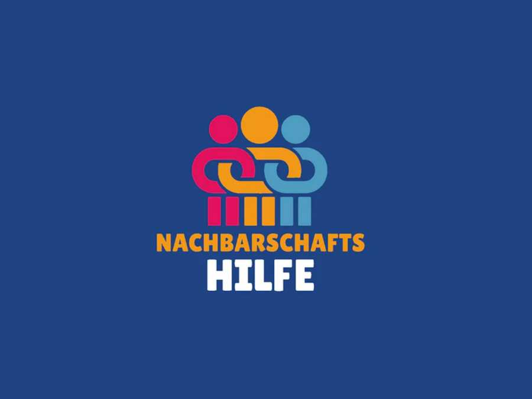

Neighbourhood Assistance
Who we are
A group of volunteers who want to help men, women and children and their families in times of hardship. We are not part of any faction within the IKG. Our members come from both religious and secular communities. Old and young. Bukharan, Georgian and Ashkenazi. Men and women.
Who we need
The more people join in, the more we can achieve. If you would like to help out in our community and have a few hours to spare, please contact us!
What we offer
We offer support of all kinds. We just listen and/or we provide active assistance. We want to reduce the burden for people in difficult situations.
It might be to do with bringing up children, the household budget or help with navigating official or medical channels. This help can and should be multi-layered and encompass many aspects of our daily lives. Are you experiencing problems like this? Or do you know of friends or family who would benefit from this kind of support?
Then please contact us on +43 664 88 20 6752 and spread the word about our offer of help, too.
КТО МЫ
Мы – группа волонтеров, готовых оказать помощь детям, женщинам, мужчинам и семьям в трудные времена. Мы не имеем отношения к партийным
группировкам еврейской общины. В нашей группе есть люди религиозные и нерелигиозные, молодые и пожилые, бухарские, грузинские и ашкеназские евреи, мужчины и женщины.
ЧТО МЫ ПРЕДЛАГАЕМ
Мы оказываем всевозможную поддержку. Мы можем выслушать ваши проблемы и/или предложить активную помощь.
Мы постараемся облегчить вам жизнь в трудной ситуации. Мы помогаем решать проблемы в разных жизненных сферах, будь то забота о детях, вопросы воспитания, домашние дела, сопровождение к врачу или в государственные и муниципальные
учреждения. Наша помощь может и должна быть всесторонней, охватывающей многие аспекты быта.
Вы столкнулись с подобными проблемами? Или у вас есть друзья и знакомые, которым наша помощь пойдет на пользу? Звоните нам по телефону
+43 664 88 20 6752. А еще вы можете рассказать другим о возможности
обратиться к нам за помощью.
КОГО МЫ ИЩЕМ
Чем больше волонтеров, тем больше добрых дел можно сделать. Если вы хотите помочь другим членам общины и готовы «потратить» на это пару часов свободного времени, просим вас обратиться в нашу группу соседской помощи! +43 664 88 20 6752
מי אנחנו
A group of volunteers who want to support
in children, women, men and their families during difficult times.
IKG- We do not belong to any political party or organization within the framework of the
In our group work together: religious and secular, young and old,
Representatives from the Georgian, Bukhari and Ashkenazi communities -
Women as men.
מה אנו מציעים
אנו מציעים את עזרתנו בתחומים שונים ומגוונים.
אנחנו כאן כדי להיות אוזן קשבת לכל דורש וגם
כדי להושיט לכם יד באופן פעיל.
ישנם קשיים בחינוך הילדים ואתם רוצים להתייעץ ולשתף?
אתם זקוקים לעזרה במשק הבית? אתם מחפשים מישהו שילווה
אתכם לפגישות במשרדי הממשלה, במרפאות ובבתי-החולים?
אנחנו הכתובת!
אנחנו רוצים לקהל עליכם במצבים קשים, במצבי לחץ ומשברים.
אנחנו יכולים ורוצים להגיש לכם עזרה יסודית ומקיפה
במצבים שונים בחיי היומיום.
האם נחשפתם לבעיות כאלה?
אם כן, אנו עומדים לרשותכם
+43 664 88 20 בטלפון 6752
האם אתם מכירים חברים או מכרים
שתמיכה זו תיטיב עמם?
ספרו להם ולאחרים על התחומים הרבים
שבהם אנו מציעים את עזרתנו.
אנחנו מחפשים אתכם!
כשאנחנו יחד הכוח שלנו גדול יותר ואנחנו יעילים יותר.
אם אתם רוצים להיות שותפים פעילים בפרויקט ההתנדבות שלנו.
ואתם מוכנים להשקיע מספר שעות בזמנכם הפנוי ולעזור
לאנשי הקהילה שלנו, אנא צרו עמנו קשר!
+43 664 88 20 6752